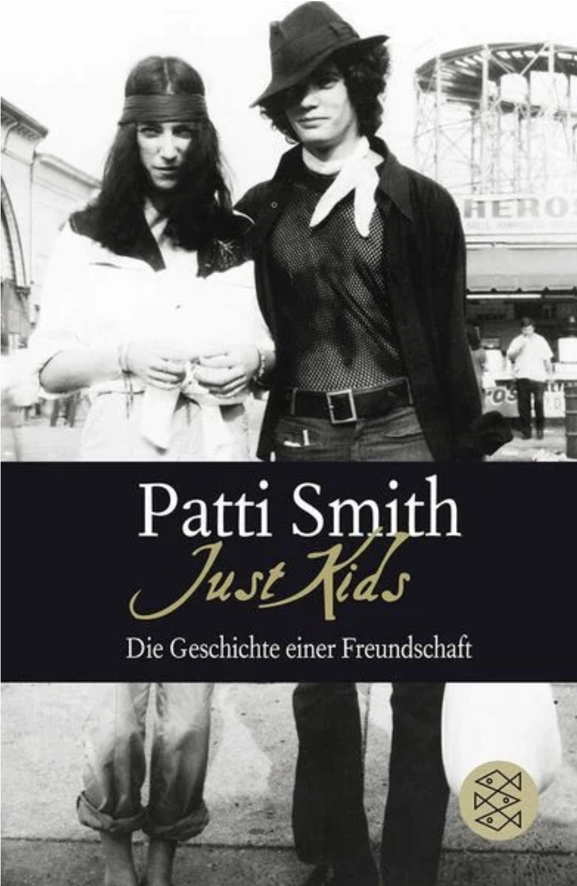
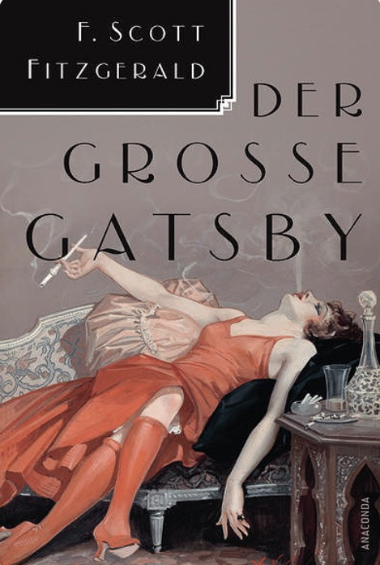

Bücher
Current Read
Ich habe das Buch im Vorspann von Luca Guadagninos Film Queer gesehen. Weil ich den Film so mag, dessen Bildsprache, Szenerie, wollte ich wissen, warum er auf dieses Buch verweist. Was werde ich in dem Buch finden, das mir hilft, den Film noch besser zu verstehen?

Favourite Read
Bis heute mein absolutes Lieblingsbuch und einer der schönsten Freundschaftsbeweise. Man wird ins New York der 60er und 70er hineingezogen und es kommt einem vor, als ob man neben Pattie stünde und alles hautnah miterlebt. Jahrzehnte später ist es einfach faszinierend von allen Persönlichkeiten zu lesen denen sie im Alltag begegnete. So viele Menschen, deren Träume und Ziele sich erfüllten, Namen, die uns heute alle ein Begriff sind. Naja, und ein, zwei Persönlichkeiten des Club 27.

Honorable Dislike
Also, ich habe das Buch privat begonnen zu lesen, weil es eben ein beliebter Klassiker ist. Ich habe festgestellt, es ist einfach nicht mein cup of tea. Ein Gefühl von Bestürzung erfasste mich als ich es dann für den Englischunterricht lesen musste. Eine Zusammenfassung im Nachhinein zu schreiben, im Zeitalter des Internets, wäre zu einfach wusste mein Lehrer. Also wollte er, dass wir unsere Meinung zu dem Buch in einer Hausarbeit aufschreiben. Ich hatte so gar keine Lust das Buch zu lesen. Und tatsächlich habe ich es auch nicht getan. Ich habe mir das deutsche Hörbuch runtergeladen und parallel das englische Buch „gelesen“ (damit ich immer auf die korrekten Seiten verweisen konnte 😉 #worksmartnothard).
Long story short: Ich finde die Geschichte belanglos und Daisy ist für mich ein absolut naiver und nerviger Charakter. Ich bin zwar nicht Reich-Ranicki… but I said what I said!